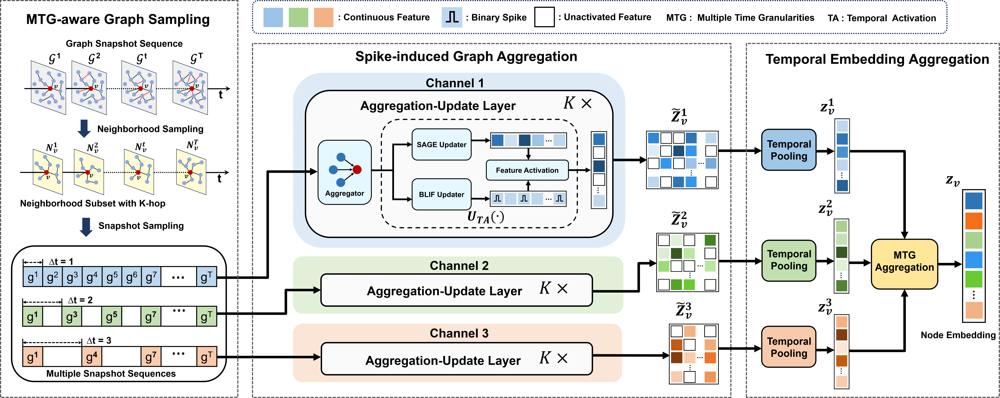
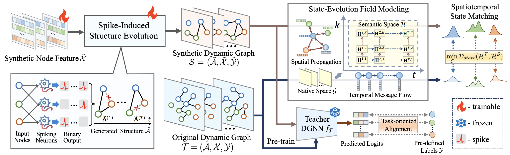

I am a second-year Master's student in Information and Communication Engineering at Beijing Jiaotong University, advised by Prof. Zhenfeng Zhu. Before that, I received my B.S. degree in Intelligence Science and Technology from China University of Petroleum (East China) in 2023.
My research interests lie at the intersection of graph learning, generative models, and multimodal systems:
* denotes equal contribution, † denotes corresponding author.

